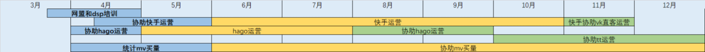
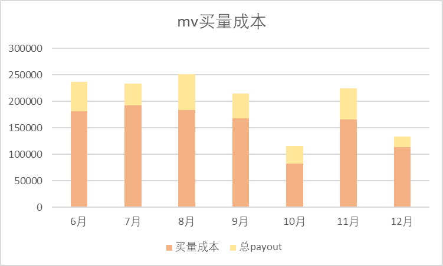
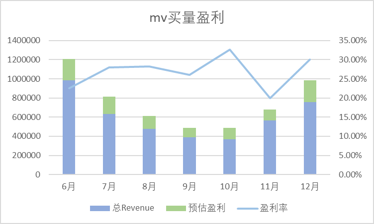
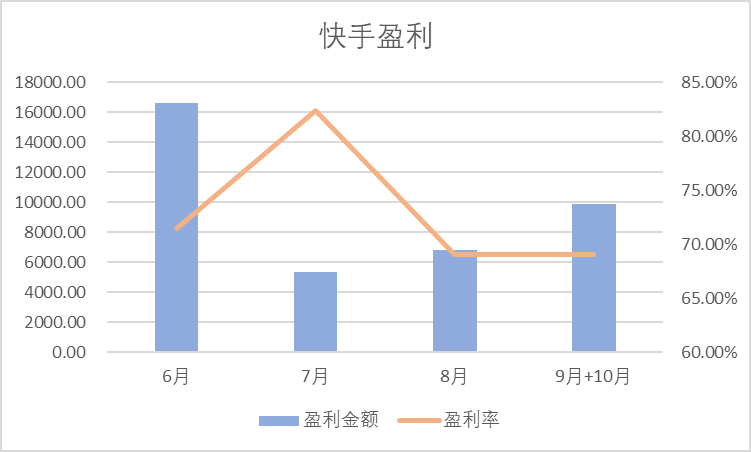

网盟运营支持
网盟工作：

MV买量：
6-12月间，开始协助一起控制mv买量。
在7、8月间和10月初多次进行cpc成本调整。左图为买量总成本变动情况，在cpc单价稳定后逐渐控制降低买量成本。右图为买量盈利情况，中间因cpc单价变高导致整体盈利下降，但在之后对各国买量成本调控，目前盈利再次呈上涨趋势。1月将会与vk分开买量成本，预计整体盈利将会有所增长。

【腾讯文档】MV买量各地区统计 https://docs.qq.com/sheet/DV05wb2VUSXBSeW55?tab=jc3bo1
【腾讯文档】MV自有量TOP单子点击使用情况(周三) https://docs.qq.com/sheet/DV1BxUU90QnVMVm9l
Hago运营：

在运营期间盈利金额稳步上涨，盈利率保持在50%以上。
协助hago运营统计：
【腾讯文档】Hago 日常假量+次留报告 https://docs.qq.com/sheet/DSnpyQW14aldvWW1F?tab=tsdqr6
注：hago在次留率要求高的情况下，又要求假量比例低，bi率高。需要在开始考虑各类流量的结算情况如何以及占比情况，之后保持流量在该准线之上。若广告主要求不合理，如需下掉所有质量表现较差的渠道，可使用mapping。
协助快手统计数据：
日统计——每日盈利情况，若亏损分析原因；周统计——分类型看渠道盈亏情况及是否达kpi标准。【腾讯文档】快手作弊数据整理 https://docs.qq.com/sheet/DV0ZwaUprcWF0bUVy?tab=beere5
快手运营：

注：在运营前，可提前预估如何实现盈利最大化。如快手需在保证bi次留达标的情况下阶梯出价，则可以采用先冲量，用更高的价格跑更多量，再补次留的方法。实现整体盈利的最大化。
Tiktok协助运营：
【腾讯文档】Tiktok 日常自研核减报告 https://docs.qq.com/sheet/DR01wd3pRQ2FQQnNG?tab=pvtp2y
【腾讯文档】Tiktok BI Gap Rate https://docs.qq.com/sheet/DR0NTcnJ5SndwcEN0?tab=lkq1kd
【腾讯文档】TT直客数据-Fly内部 https://docs.qq.com/sheet/DZlh4QUxEcmdoR1Fl?tab=BB08J2
【腾讯文档】Tiktok流量占比&自有量盈亏分析（周四） https://docs.qq.com/sheet/DR3FMTlZLSW5YZExv
【腾讯文档】点击Gap 统计 https://docs.qq.com/sheet/DZE5sTFpTd0RjZ1Jh
【腾讯文档】tt-pa,次留及工作室占比 https://docs.qq.com/sheet/DSk5Va2FzTHNxSnhw
为方便TT整体数据观察，自制可视化图表：
Tiktok可视化
未来计划：
预测cr和假量阈值：
前段时间TT出现点击过滤，原因未知，预估cr过低和block导致的pa回溯会导致点击过滤。之后会预测连续几日的cr过低会导致大量假量出现，以及流量类型的配比对假量的影响，得出各类流量应有的比例。
渠道扣量扣价程序：
日常运营中会出现已知广告主和渠道单价，需要计算给渠道扣量多少方可盈利。之后会给出输入价格或其他指标，给出流量应有的扣价扣量比例和盈利情况的程序。
流量配比程序：
各广告主的kpi不同，渠道的质量表现也不同，部分情况下存在广告主要求的多项kpi和渠道质量表现相悖的情况，这时需计算渠道类型占比多少，能够达到怎样的量级。之后会考虑给出可通用的流量配比建议的程序。